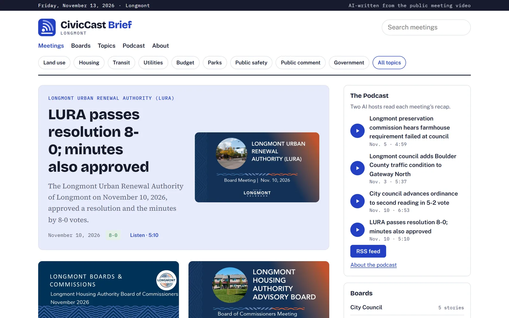
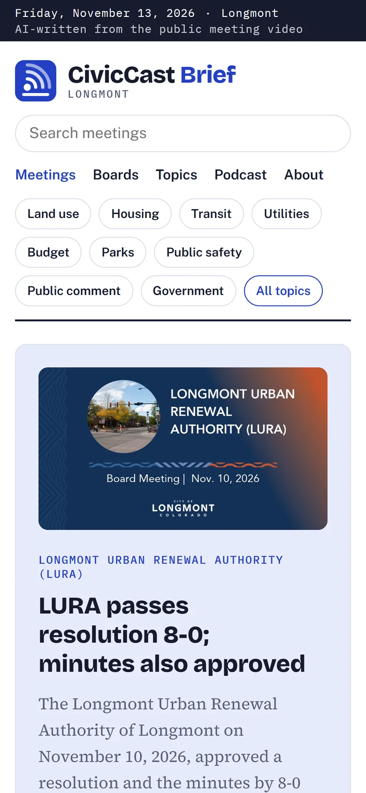
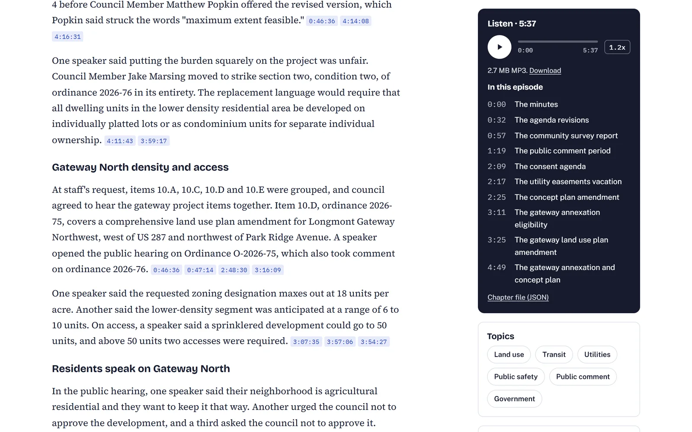
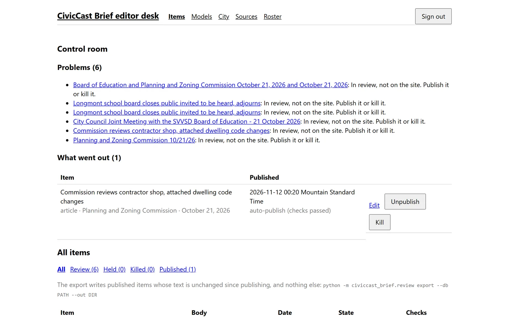

Stories cited to the second
Each paragraph, vote and quote links to the second in the video where it was said, or to the page of the packet or minutes it came from.
Version 0.2.0 · open source · Windows 11
CivicCast Brief reads a city's public meeting videos, agendas, packets and minutes, then writes a news story, a recap and a two-host podcast episode for each meeting. Every paragraph, vote and quote links to the second in the video where it was said.
Self-hosted · Apache-2.0 · free open-source voices, no hosted text-to-speech


The problem
A council meeting can run four hours. The record is spread across a video, an agenda, a packet of hundreds of pages and minutes that come out weeks later. Most towns no longer have a reporter in the room.
Summaries you can check.A recap is only useful if a reader can see where each sentence came from.
No made-up facts.A claim, number or name that is not in the meeting's own words or documents is dropped.
Cheap enough for one town.A static site, a feed and audio made on one Windows PC, with no paid voice service.
One speaker said putting the burden squarely on the project was unfair. Council Member Jake Marsing moved to strike section two, condition two, of ordinance 2026-76 in its entirety. 4:11:43 3:59:17
On access, a speaker said a sprinklered development could go to 50 units, and above 50 units two accesses were required. 3:07:35 3:57:06
How it works
The weekly run finds the last seven days of meetings and takes each new one through every step. It records each step, so running it again retries only what failed.
city find finds a city's meeting sources, with no AI model. You tick what to keep.
Video captions, the agenda and, where the platform has them, the packet and the minutes.
Times on every line. Speaker names from the roll call, member list and agenda.
Every claim quotes the meeting word for word, with the time it was said.
A news story and a two-host podcast script, both written from the recap.
A checker compares every sentence to the record and drops what it cannot find.
Items that pass go out. Items that fail wait on the editor's Problems list.
Audio with chapters, the static site and the feed, deployed to your host.
Features
Each paragraph, vote and quote links to the second in the video where it was said, or to the page of the packet or minutes it came from.
The recap, story and podcast script are each checked against the record. A claim that is not there does not reach the page.
Sign-in, a control room with Problems and What went out, Edit, Unpublish, Kill and Redraft. A failed item never publishes by itself.
Each meeting gets an episode with chapters and a transcript, read by the Dia2 voice engine on your own GPU. The feed follows the Apple Podcasts and Spotify formats.
PrimeGov, Granicus, YouTube, Cablecast, CivicWeb, CivicClerk, CivicPlus, eScribe and Laserfiche, plus web pages, Google Drive and OneDrive shares.
A plain static site with search, board, topic and monthly pages. Deploy it to Cloudflare Pages with audio on R2, or copy it to any web server.
See it
Readers get a plain news story, an audio player with chapters, and a time on every claim.

The control room shows what needs a person, and what already went out.

Architecture
Everything runs on one Windows PC, or on a station server with a Windows PC doing the parts a server cannot. The output is plain files.
Python 3.12 with uv. One package with a command per step: meeting, script, article, review, audio, site, weekly and station.
No API key. Claude is called through claude -p on a subscription; other bodies can use any model in Ollama.
Diagrams in the manual. The architecture section has the pipeline, the parts, an item's life on the desk and the station with a PC worker.
Quick start
Install. One command installs uv, Python packages, ffmpeg and yt-dlp for your user, with no administrator rights, and writes desk.cmd.
Open the desk. Double-click desk.cmd. Your browser opens the desk; make the first account.
Find your city. On Sources, search for the city, tick what it found, then Check all sources.
Run the week. Run the weekly command, or schedule it. New meetings appear on the desk.
# 1. Install (or double-click install.cmd in a copy of the code)
> powershell -ExecutionPolicy Bypass -c "irm https://raw.githubusercontent.com/scottconverse/civiccast-brief/main/install.ps1 | iex"
# 2. Open the editor desk
> .\desk.cmd
# 4. Run the week for your city
> python -m civiccast_brief.weekly run --city cities/yourcity `
--work runs/weekly --db desk.db --episodes site-in `
--media media --site-out site `
--base-url https://yourcity.example.org `
--media-base-url https://media.example.orgEvery option is in Set up a city.
Deployment
station deploy cloudflare uploads new audio to an R2 bucket and deploys the site to Pages. The token is read from Windows Credential Manager and never printed.
station deploy folder copies the site and media into folders a web server serves, and removes only files it put there.
station serve runs the desk and the weekly job on a server. A Windows PC fetches captions and makes audio for it. The Hostinger guide has not been run on a Linux server.
Status
Version 0.2.0. The whole pipeline runs every week for one real city. Some outside services are not connected yet.
Episodes are AI-generated. Check the official meeting record before you rely on anything they say. The citations are there so you can.
CivicCast Brief is free and open source under the Apache-2.0 license.